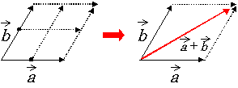
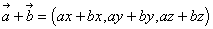

Given two vectors,  and
and  , you can add them together to define a diagonal vector, which in turn specifies a parallelogram as shown here:
, you can add them together to define a diagonal vector, which in turn specifies a parallelogram as shown here:

The two vectors form two of the sides of the parallelogram and the diagonal specified by the addition of the two vectors defines the upper-right corner, which in turn specifies the other two sides of the parallelogram.
The following shows how vector addition is done:



Nintendo® Confidential
Copyright © 1999
Nintendo of America Inc. All Rights Reserved
Nintendo and N64 are registered trademarks of Nintendo
Last Updated March, 1999